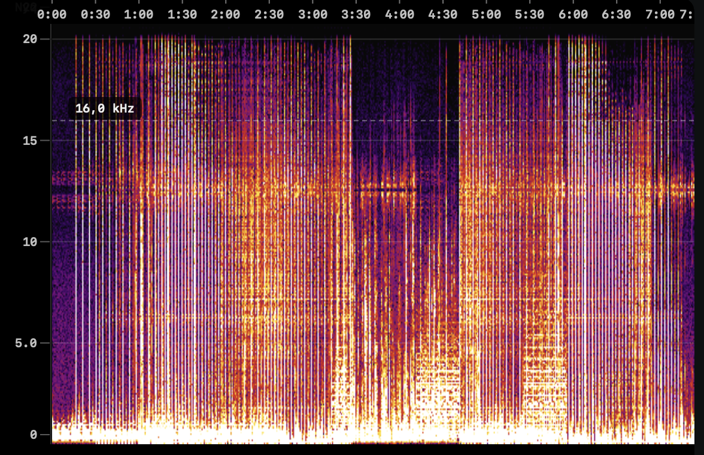
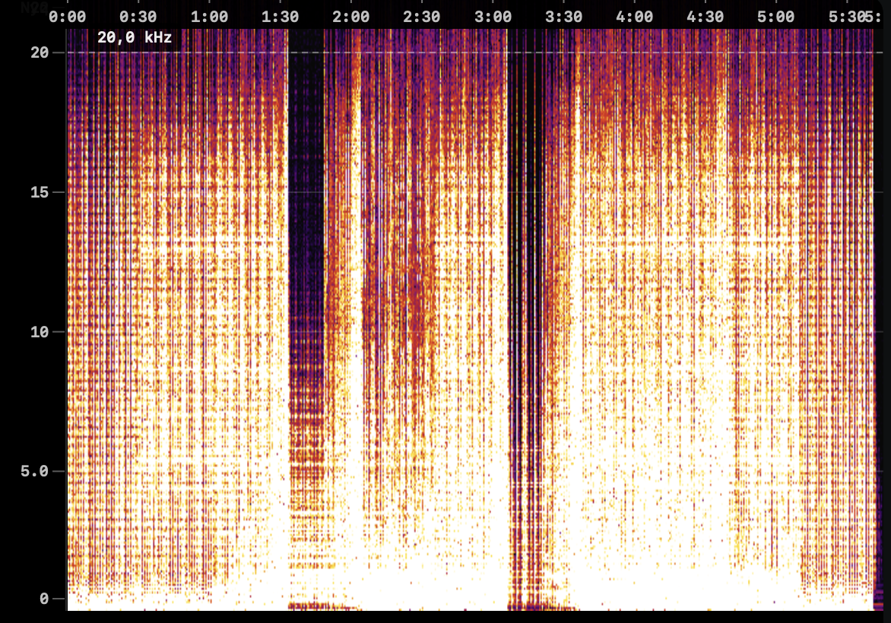

Cutoff around 16 kHz. Strong upper-band drop, likely lossy transcode.
Native macOS lossless triage
Drop one track or a whole library. Flaccer analyzes the real spectral content locally, groups verdicts, and tags your files right in Finder.
Detect fake lossless files before your next gig.
The problem
Promo folders, online stores, and old libraries are full of MP3s renamed to FLAC, WAV, or AIFF. The file size goes up. The missing top end does not come back.

Cutoff around 16 kHz. Strong upper-band drop, likely lossy transcode.

Energy reaches Nyquist. High frequencies remain visible.
How it works
Import individual tracks, big folders, M3U/M3U8 playlists, or Rekordbox XML.
Flaccer checks actual spectral content, not metadata or file extension.
Filter by verdict, inspect the graph, copy paths, export CSV, or reveal in Finder.
macOS Finder integration
Flaccer can replace Finder color tags automatically: green for lossless, yellow for medium, red for fake, and gray for errors.

Library friendly
No uploads, no account, no backend analysis. Flaccer runs locally, uses local macOS decoding APIs, and works without sending your music anywhere.